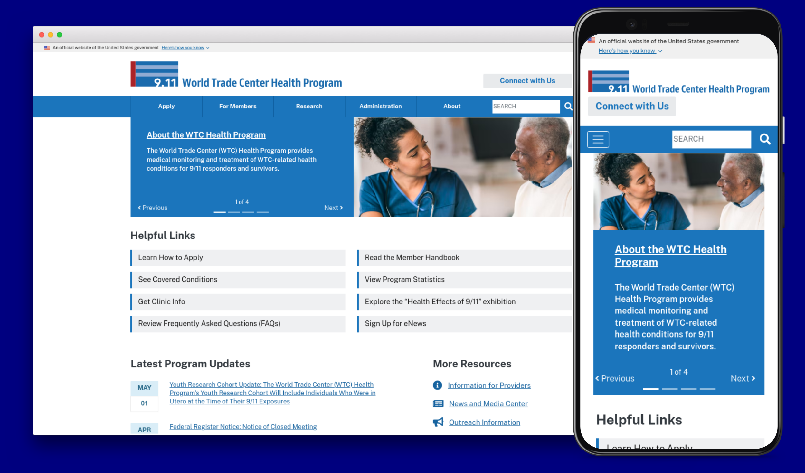
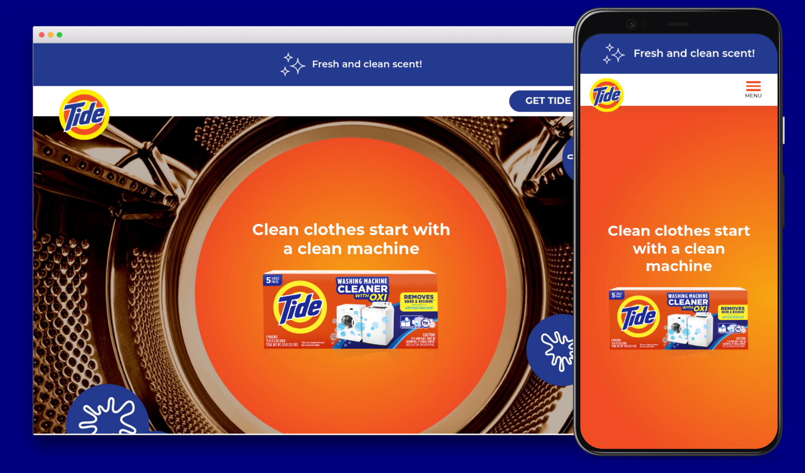

Hi I'm Cassidy, a Front-End Web Developer
I would love to work with you! I am a detail-oriented front-end web developer with over 4 years of experience using JavaScript, HTML, and CSS to create mobile-friendly and accessible websites.
Projects

World Trade Center Health Program
Technologies used: HTML, CSS, JavaScript
Key accomplishments: Upgraded site framework from Bootstrap 3 to 4. Redesigned header navigation and footer menu. Developed homepage banner carousel.

Tide Washing Machine Cleaner
Technologies used: WordPress, HTML, CSS, JavaScript
Key accomplishments: